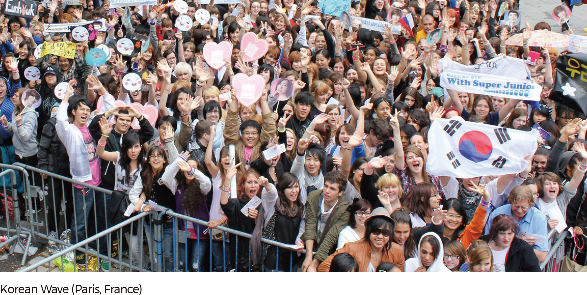
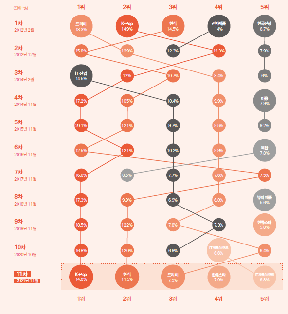

한류 근황
| 최근 K-POP에 열광하는 유럽 청소년들이 증가하고있습니다. 우리 나라는 이제까지 외래 문물을 받아들이거나 모방해온 나라에서, 새로운 문화를 창조하고 그것을 전수하는 위대한 나라로 탈바꿈하고 있는 것입니다. 한국 문화는 저력이 있고 날이 갈수록 탄력이 붙고 있습니다. 이제 한류는 유럽을 넘어 남아메리카, 동남아와 아프리카에까지 그 영역을 확장하고 있습니다. |
|  | 한류: "한국의 대중문화" 가 아시아를 중심으로 해외로 전파되어 인기리에 소비되는 문화 현상 |
| 최근 K-POP에 열광하는 유럽 청소년들이 증가하고있습니다. 우리 나라는 이제까지 외래 문물을 받아들이거나 모방해온 나라에서, 새로운 문화를 창조하고 그것을 전수하는 위대한 나라로 탈바꿈하고 있는 것입니다. 한국 문화는 저력이 있고 날이 갈수록 탄력이 붙고 있습니다. 이제 한류는 유럽을 넘어 남아메리카, 동남아와 아프리카에까지 그 영역을 확장하고 있습니다. |
|  | 해외 한류 소비자들은 한국 연상 이미지로 5년 연속 'K-Pop'(14%)을 가장 먼저 떠올렸습니다. 이어 '한식'(11.5%),'드라마'(7.5%),'한류스타'(7.0%),'IT제품/브랜드'(6.8%)순으로 높은 응답률을 기록했다.<오징어게임>의 글로벌 신드롬 영향으로 '드라마'가 전년도 5위에서 3위로 두 계단 상승 한 것이 눈에 띕니다. |
|
|
한국 문화 컨텐츠를 경험한 이후 한국에 대한 인식이 긍정적으로 바뀌었다는 응답은 64.2%로 2020년과 비교해 5.4% 증가했습니다. 인도(83.2%), 태국(82.4%), 베트남(80.2%) 등 동남아 국가의 긍정 변화 비율이 상대적으로 높았고, UAE(76.5%)와 남아공(73.5%)도 70% 이상의 높은 수치를 기록했습니다. |
한국 문화 컨텐츠에 대한 호감도는 '드라마'가 81.6%로 가장 높았고, 그 다음으로는 '영화'(80.6%),'예능'(79.9), '음식'(78.5%),'뷰티'(78.3%),'패션'(77.3%),'게임'(76.7),'출판물'(75.8),'애니메이션'(74.7),'음악'(73.7)순 입니다.
해외 한류 소비자의 전체 문화 콘텐츠 소비량 중 한국 콘텐츠 비중은 '뷰티'가 31.7%로 가장 높았고, 그 다음으로는 '드라마'(31.0%),'패션'(29.2%),'예능'(28.6%),'영화'(28.6%)순 입니다.
| TOP1. 오징어 게임 | 21.2% |
| Top2. 사랑의 불시착 | 2.2% |
| Top3. 빈센조 | 1.9% |
| Top4. 펜트하우스 | 1.6% |
| Top5. 갯마을 차차차/태양의 후예 | 1.4% |

| TOP1. 이민호 | 9.3% |
| Top2. 현빈 | 3.1% |
| Top3. 공유 | 2.8% |
| Top4. 송혜교 | 2.2% |
| Top5. 송중기 | 2.1% |

| TOP1. 기생충 | 10.3% |
| Top2. 부산행 | 6.8% |
| Top3. 서복 | 1.5% |
| Top4. 미드나이트/승리호 | 1.3% |
| Top5. 콜/싱크홀 | 1.1% |

| TOP1.방탄소년단 | 26.7% | |
| Top2.블랙핑크 | 10.4% | |
| Top3.아이유 | 2.8% | |
| Top4.리사(블랙핑크) | 2.4% | |
| Top5.싸이/트와이스 | 2.1% |